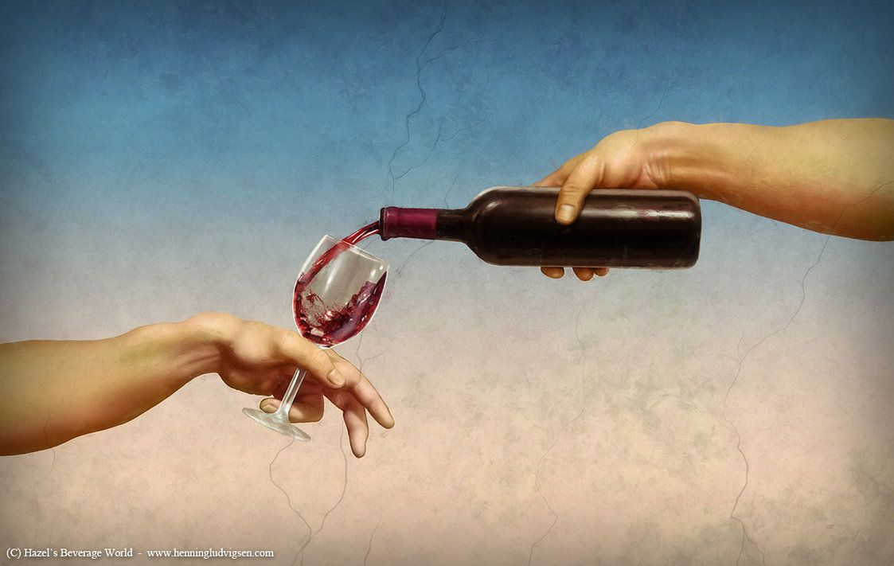
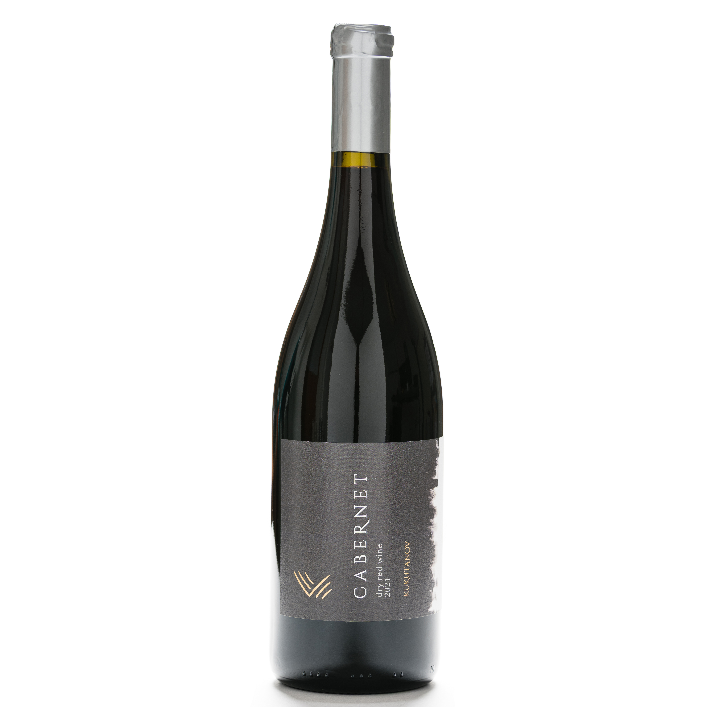
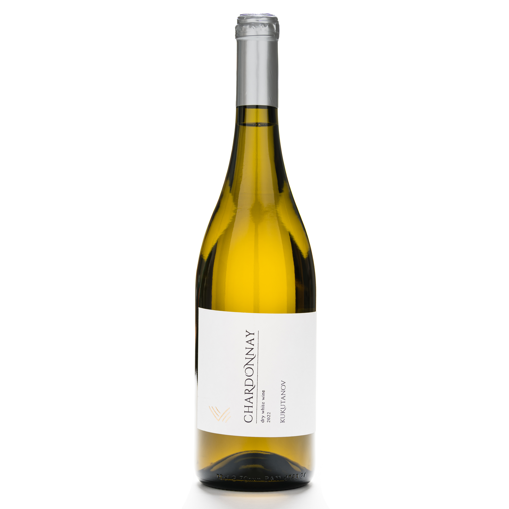
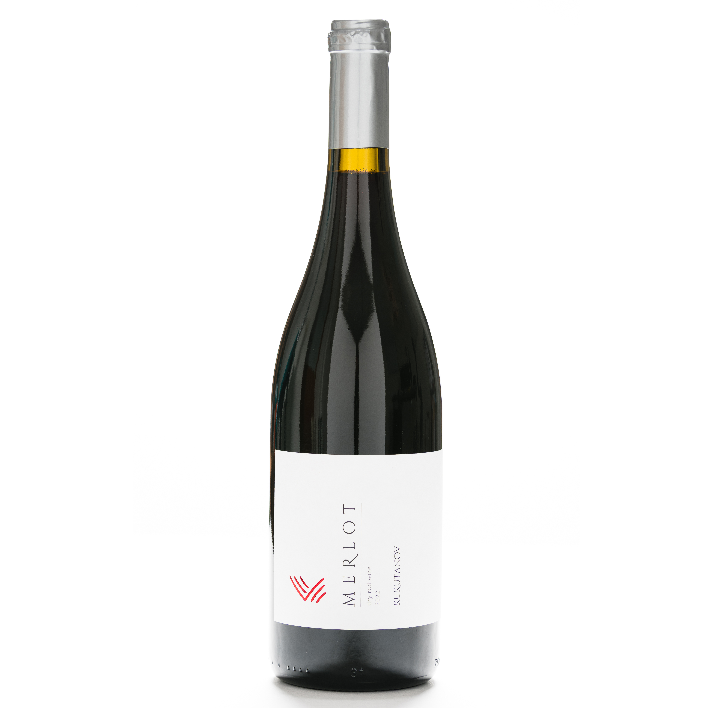
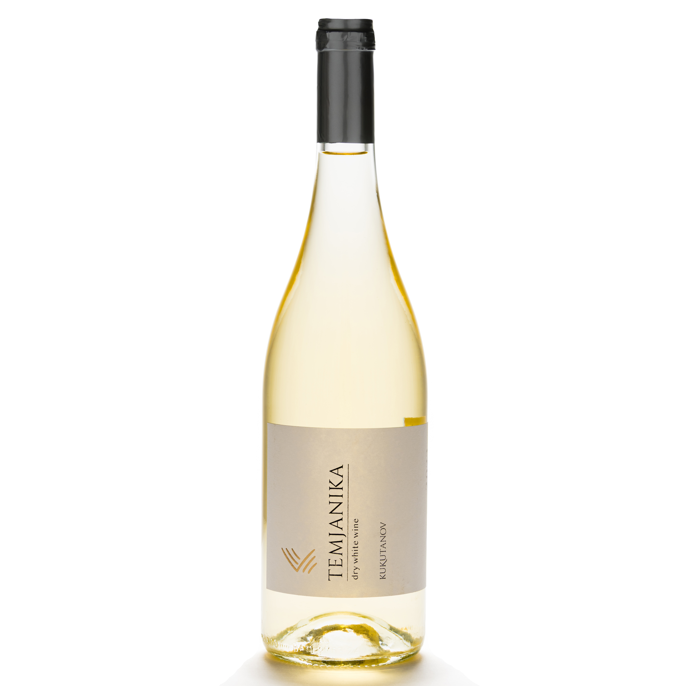
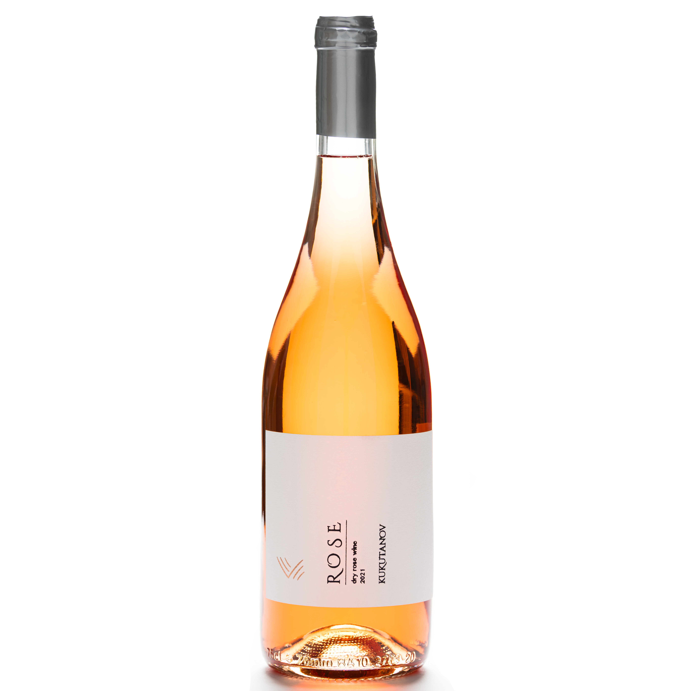
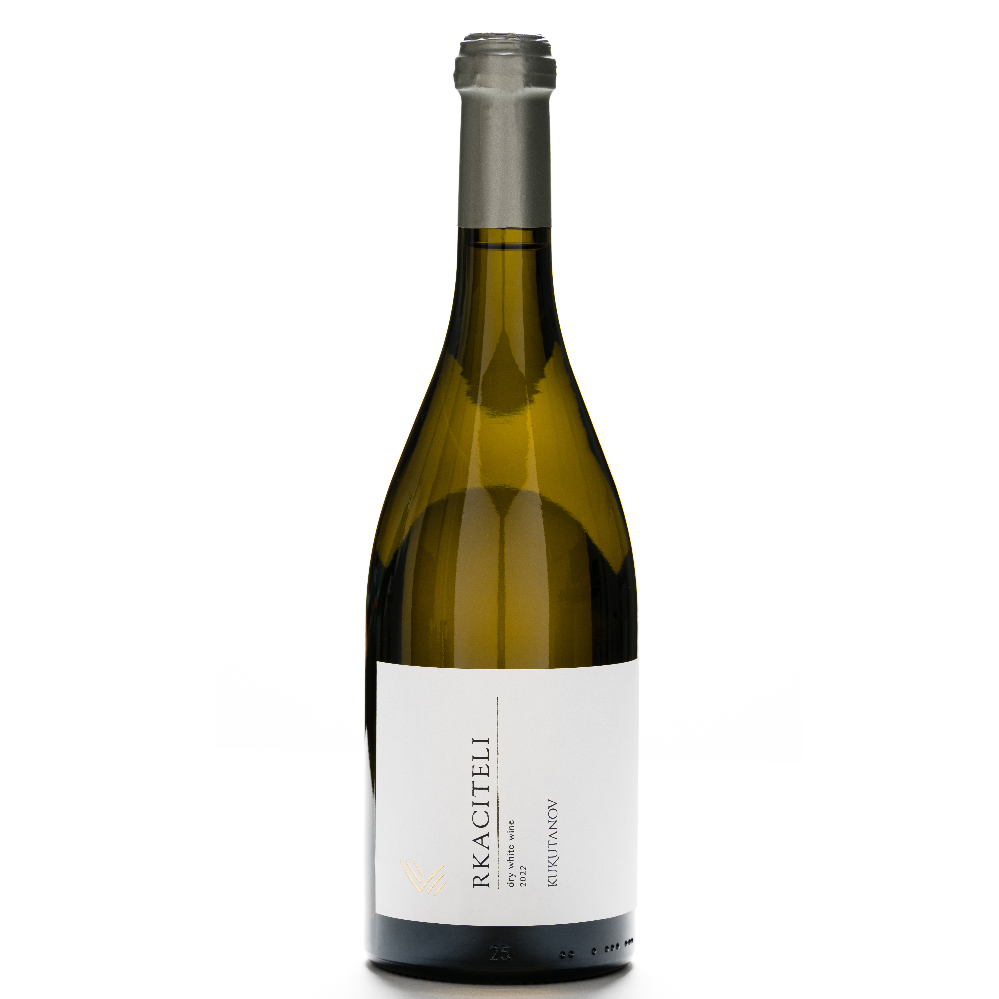

Usgwählti Wiine mit Charakter, Tradition und einzigartigem Gschmack.

Der Cabernet vom Weingut Kukutanov ist ein hochwertiger trockener Rotwein, der aus der Rebsorte Cabernet Sauvignon gekeltert wird. Er zeichnet sich durch eine rubinrote Farbe und weiche, milde Tannine aus. Das Aromaprofil ist intensiv fruchtig und erinnert an rote Beeren, vermischt mit würzigen Noten. Am Gaumen ist er vollmundig, ausgewogen und angenehm und folgt damit dem Bouquet. Dieser Wein ist eine ausgezeichnete Wahl zu rotem Fleisch und Wild.
Serviertemperatur: 16–18 °C.
Alkoholgehalt: 14%

Der Chardonnay vom Weingut Kukutanov ist ein trockener Weisswein mit einer blassgelb-grünen Farbe. Das Aroma ist fruchtig und tropisch, mit Zitrusnoten sowie Noten von Aprikose und Melone. Am Gaumen bestätigt sich das Bouquet, der Wein ist lang und frisch, mit einem Abgang, der zum nächsten Schluck einlädt. Er passt perfekt zu Fisch, Meeresfrüchten und weissem Fleisch.
Serviertemperatur: 8–10 °C.
Alkoholgehalt: 13%

Ein hochwertiger trockener Rotwein aus der Merlot-Traube. Er zeichnet sich durch eine rubinrote Farbe und weiche, elegante Tannine aus. Das Aromenprofil umfasst reife Kirsche, schwarze Pflaume und Schokolade, verwoben mit Kräuternoten. Am Gaumen ist er weich und vollmundig, mit einem langen Abgang von Schokolade und Mokka. Er passt ideal zu allen Arten von Speisen, von leichten Nudelgerichten bis hin zu herzhaften Braten.
Serviertemperatur: 15–17 °C.
Alkoholgehalt: 14%

Der „Temjanika“ vom Weingut Kukutanov ist ein trockener Weisswein mit einer blassgelb-grünen Farbe. Das intensive Aroma von Holunderbeeren, ergänzt durch blumige Noten und einen erfrischenden Geschmack, der an Pfirsich erinnert, macht ihn zur idealen Wahl für warme Sommertage. Er passt perfekt zu Gemüse- und Obstsalaten, gewürztem Hähnchen und leichten Desserts.
Serviertemperatur: 6–8 °C.
Alkoholgehalt: 12%

Der Roséwein von Weingut Kukutanov ist ein einzigartiger, trockener Roséwein, der auf traditionelle Weise hergestellt wird. Er zeichnet sich durch eine ausgeprägte rosa Farbe aus, die schon auf den ersten Blick ins Auge fällt. Das Aromenprofil ist überraschend fruchtig und sehr intensiv. Am Gaumen ist er weich, zart und elegant, und seine angenehme Säure macht ihn zu einer ausgezeichneten Wahl zu jeder Gelegenheit und zu einer Vielzahl von Speisen.
Serviertemperatur: 8–10 °C.
Alkoholgehalt: 13%

Der Rkaciteli vom Weingut Kukutanov ist ein trockener Weisswein mit einer blassgelben Farbe und grünlichen Reflexionen. Das Aromenprofil ist würzig und blumig, ergänzt durch Noten von Apfel, Aprikose und Pfirsich. Am Gaumen ist er harmonisch und erfrischend und passt perfekt zu grünen Salaten, Pasta, weissem Fleisch und allen Arten von Meeresfrüchten.
Serviertemperatur: 8–10 °C.
Alkoholgehalt: 14.5%